Relacionamentos: o coração de um dashboard inteligente
Você vai juntar as três bases de vendas numa só, entender tabela fato, tabela dimensão, chave primária e chave estrangeira, ligar as tabelas na Exibição de Modelo e ver os gráficos passarem a cruzar informações de tabelas diferentes.
- Nível
- Básico
- Duração
- 3 horas
- Você vai precisar
- Power BI Desktop (gratuito, Windows)
- Conteúdos
- Acrescentar ConsultasHabilitar cargaTabela FatoTabela DimensãoChave PrimáriaChave EstrangeiraCardinalidade 1:*Modelo estrela
01Por que as empresas usam várias tabelas
“Um dashboard bonito chama atenção. Um dashboard com relacionamentos corretos gera informação confiável.”
Você já tem vendas, clientes e produtos no Power BI. Tente montar um gráfico de Faturamento por Marca ou Quantidade vendida por Gênero: ainda não funciona. Antes, você precisa relacionar as tabelas.
Imagine tudo numa única planilha
| Cliente | Sexo | Idade | Produto | Marca | Preço | Data | Qtd |
|---|---|---|---|---|---|---|---|
| João | Masculino | 35 | Smart TV | Samsung | 3.000 | 05/01/2024 | 1 |
| João | Masculino | 35 | Notebook | Dell | 4.500 | 07/01/2024 | 1 |
| João | Masculino | 35 | Mouse | Logitech | 120 | 08/01/2024 | 2 |
Nome, sexo e idade do João se repetem em cada compra. Com milhões de vendas, isso gera arquivos enormes, desperdício de espaço, dificuldade para atualizar (se o João mudar de cidade, você altera mil linhas) e mais chance de erro.
A solução é dividir em tabelas menores, cada uma sobre um assunto:
| Tabela | Assunto | Cada linha é… |
|---|---|---|
| CadastroClientes | Quem compra | um cliente (aparece uma única vez) |
| CadastroProdutos | O que é vendido | um produto (aparece uma única vez) |
| BaseVendas | O que aconteceu | um item vendido (só com códigos: SKU, ID Cliente, quantidade, data) |
02Unificando as bases de 2020, 2021 e 2022
Uma única tabela de vendas: uma medida de faturamento, todos os anos no mesmo gráfico.
Com uma tabela por ano, você precisaria de uma medida para cada tabela, não conseguiria comparar anos no mesmo gráfico e o modelo ficaria difícil de manter. Em projetos profissionais existe uma tabela de vendas, a Tabela Fato.
Abra Transformar dados. No painel de consultas devem existir BaseVendas2020, BaseVendas2021 e BaseVendas2022, com as mesmas colunas: Data da Venda, Ordem de Compra, SKU, ID Cliente, Qtd Vendida, ID Loja.
As colunas precisam ter exatamente o mesmo nome nas três. “Qtd Vendida” e “Qtd vendida” viram duas colunas diferentes, cheias de null.
- Em Página Inicial, clique na setinha ▼ de Acrescentar Consultas.
- Escolha Acrescentar Consultas como Nova.
- Marque Três ou mais tabelas.
- Adicione as três bases de vendas à direita e clique em OK.
Ela cria uma consulta nova e preserva as originais. Se você clicar só em Acrescentar Consultas, a consulta selecionada é modificada.
Não acrescente CadastroClientes, CadastroProdutos ou CadastroLojas: cadastros não se empilham com vendas.
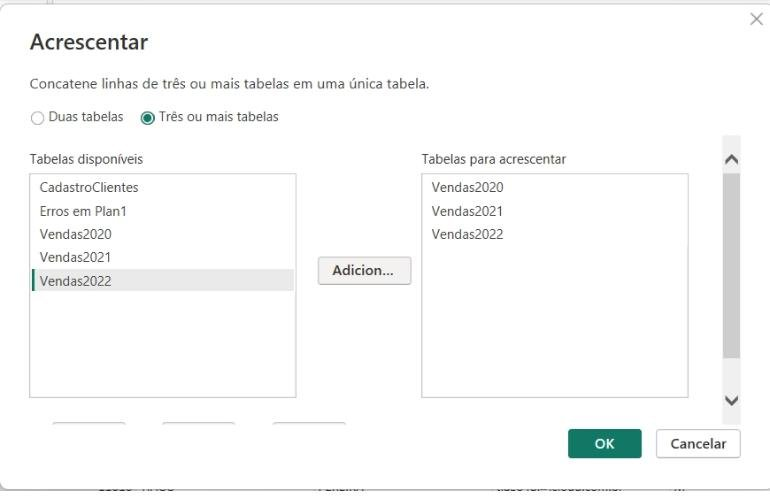
A nova consulta nasce como Acrescentar1. Renomeie para BaseVendas. O código dela é curto:
let
Fonte = Table.Combine({BaseVendas2020, BaseVendas2021, BaseVendas2022})
in
FonteAs bases anuais só servem para alimentar a BaseVendas. Clique com o botão direito em cada uma e desmarque Habilitar carga. O nome fica em itálico.
Sem isso, o modelo teria as mesmas vendas duas vezes (nas anuais e na BaseVendas), pesando o arquivo e confundindo quem monta os gráficos.
Clique em Fechar e Aplicar. No modelo devem aparecer só: CadastroClientes, CadastroProdutos, CadastroLojas, CadastroLocalidades, BaseDevolucoes e BaseVendas.
Ano que vem chegou Base Vendas - 2023.xlsx? Importe, acrescente à BaseVendas e todos os gráficos passam a considerar 2023.
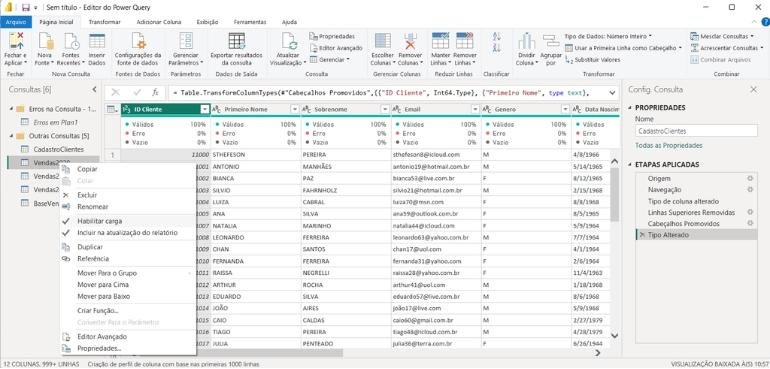
03Fato, dimensão e chaves
Os quatro conceitos que você vai usar em todo projeto de BI.
| Tabela Fato | Tabela Dimensão | |
|---|---|---|
| Registra | Acontecimentos (vendas, devoluções) | Características (cliente, produto) |
| Tamanho | Grande, cresce todo dia | Pequena, muda pouco |
| Contém | Números e códigos | Descrições |
| Responde | Quanto? Quando? Quantas unidades? | Quem? O quê? Onde? |
| Exemplo | BaseVendas | CadastroClientes, CadastroProdutos |
Chave primária (PK)
A coluna que identifica cada registro de uma dimensão, sem repetição. Nunca existirão dois produtos com o mesmo SKU nem dois clientes com o mesmo ID Cliente.
Chave estrangeira (FK)
A mesma coluna na tabela fato, onde ela pode repetir: o produto HL1005 aparece em todas as vendas dele. A chave estrangeira aponta para a chave primária.
Existe repetição na coluna? Se não, provavelmente é chave primária. Se sim, é chave estrangeira.
Como o Power BI sabe quem comprou? Na BaseVendas aparece ID Cliente = 11015. Ele procura 11015 em CadastroClientes, encontra “Caio Caldas” e entende que a venda é dele. O mesmo com o SKU e o produto. Tudo em milissegundos.
04Criando os relacionamentos
Clique no terceiro ícone da barra esquerda, Modelo. As tabelas aparecem como cartões, ainda sem ligação.
Organize: dimensões em cima, fato embaixo. Não muda o funcionamento, mas facilita muito a leitura.
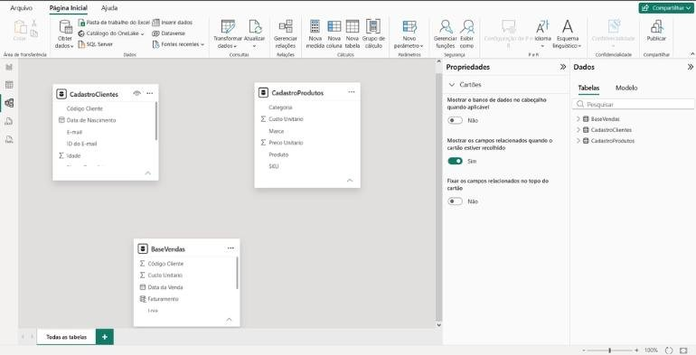
Clique em ID Cliente no cartão de CadastroClientes e arraste até ID Cliente da BaseVendas. Confira na janela:
- Da tabela: CadastroClientes, coluna ID Cliente;
- Para a tabela: BaseVendas, coluna ID Cliente;
- Cardinalidade: Um para muitos (1:*);
- Direção do filtro cruzado: Único;
- Ativar este relacionamento: marcado.
Clique em Salvar. “1 para muitos” significa: um cliente aparece uma vez no cadastro e pode ter muitas compras.
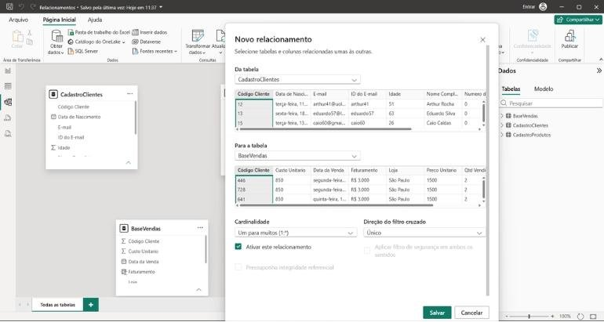
Faça o mesmo de CadastroProdutos[SKU] para BaseVendas[SKU]. Mais uma vez, 1:*: um produto é cadastrado uma vez e vendido milhares de vezes.
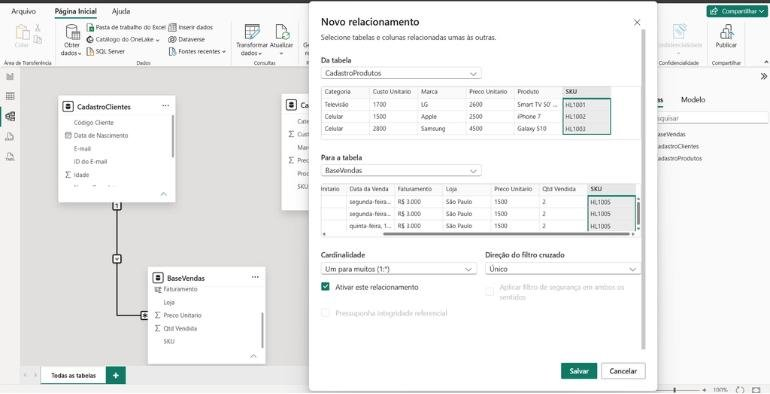
Agora existem linhas ligando as tabelas, com 1 do lado da dimensão e * do lado da fato. Clique numa linha para ver as propriedades no painel à direita.
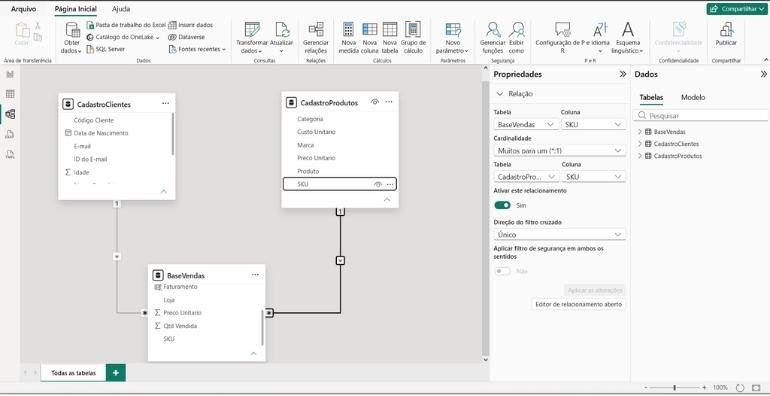
Antes do relacionamento, um gráfico de Faturamento por Marca repetia o mesmo valor (o total) em todas as marcas. Depois, cada marca mostra o seu valor, mesmo com a marca numa tabela e as vendas em outra.
05Primeiro dashboard com tabelas relacionadas
Imagine que você é o gerente comercial e quer ver o desempenho do negócio de relance.
Volte para Relatório. Insira um Gráfico de barras clusterizado: Eixo Y = CadastroProdutos[Categoria]; Eixo X = BaseVendas[Qtd Vendida].
Mostra quais categorias saem mais. A categoria vem de uma tabela e a quantidade de outra; só funciona por causa do relacionamento SKU.
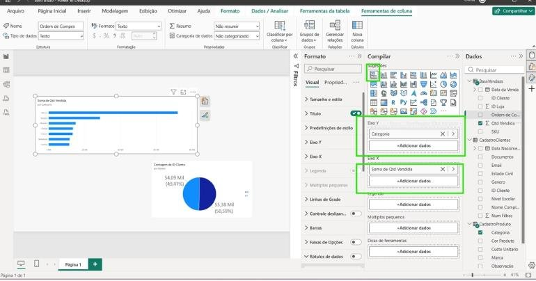
Insira um Gráfico de pizza: Legenda = CadastroClientes[Genero]; Valores = BaseVendas[ID Cliente] (mude para Contagem). Em Formato → Rótulos de detalhe, aumente a fonte.
Mostra o perfil do público comprador e ajuda a direcionar campanhas.
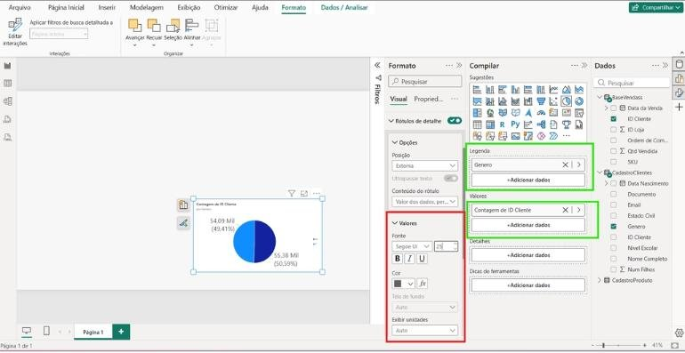
Insira um Gráfico de área ou de linhas: Eixo X = BaseVendas[Data da Venda]; Eixo Y = Qtd Vendida. O Power BI cria a hierarquia Ano → Trimestre → Mês → Dia.
Mostra a tendência: as vendas estão crescendo ou caindo? É a primeira pergunta de qualquer diretor.
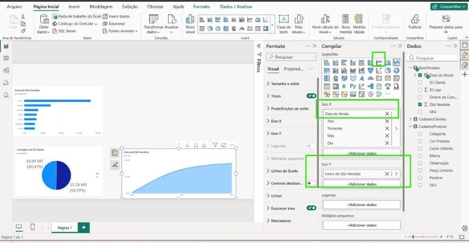
Mais um gráfico de barras: Eixo Y = CadastroProdutos[Marca]; Eixo X = Qtd Vendida. Classifique em ordem decrescente.
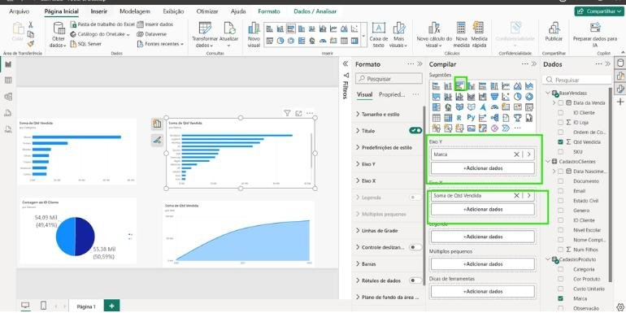
Insira uma Caixa de texto com o título Dashboard Executivo de Vendas. Agora clique numa marca, numa fatia da pizza ou numa categoria: todos os gráficos se filtram juntos. Isso é um dashboard dinâmico.
Sugestão de cores para os cartões (aula 5)
- Total de Vendas: azul (confiança, visão geral);
- Faturamento: verde (receita, crescimento);
- Clientes: laranja (chama atenção para a base);
- Produtos vendidos: roxo (diferencia o indicador).
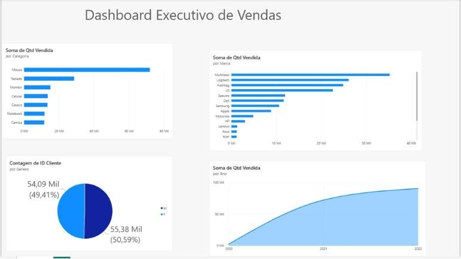
06Erros comuns
O gráfico repete o mesmo número em todas as barras
Falta relacionamento entre a tabela do eixo e a da medida, ou ele está inativo (linha tracejada). Confira em Página Inicial → Gerenciar relações.
O Power BI criou uma relação Muitos para muitos
A coluna da dimensão tem valores repetidos (SKU duplicado no cadastro, por exemplo). Volte ao Power Query, selecione a coluna e use Remover Linhas → Remover Duplicadas na dimensão, depois refaça a relação.
A relação não aparece ao arrastar
Os tipos das colunas são diferentes (texto de um lado, número do outro). Deixe os dois iguais no Power Query.
As vendas aparecem em dobro
Você esqueceu de desabilitar a carga das bases anuais e está somando BaseVendas2020 + BaseVendas.
07Atividades
A1 · Lojas
BásicoRelacione CadastroLojas com a BaseVendas pela coluna do ID da loja. Qual é a chave primária e qual é a estrangeira?
A2 · Gráfico entre 3 tabelas
IntermediárioCrie uma matriz com Marca nas linhas, Genero nas colunas e Qtd Vendida nos valores. Responda: qual marca vende mais para clientes do sexo feminino?
A3 · Localidades
IntermediárioAbra CadastroLojas e CadastroLocalidades e descubra qual coluna liga as duas. Crie esse relacionamento e faça um gráfico de quantidade vendida por cidade ou estado.
Pense
Agora o filtro vai de Localidades → Lojas → Vendas. Esse encadeamento de dimensões é chamado de floco de neve (snowflake).
A4 · Devoluções
DesafioImporte (se ainda não importou) a Base Devoluções, identifique as chaves estrangeiras e relacione com as dimensões. Monte um gráfico de quantidade devolvida por categoria.
08Resumo da aula
- Use Acrescentar Consultas como Nova para empilhar bases de mesmo formato.
- Desabilite a carga das consultas que só servem de insumo.
- Fato registra acontecimentos; dimensão descreve.
- Chave primária não se repete; estrangeira se repete e aponta para a primária.
- O relacionamento mais comum é 1:* com filtro Único, da dimensão para a fato.
- 80% da qualidade de um dashboard está no modelo; 20% no visual.